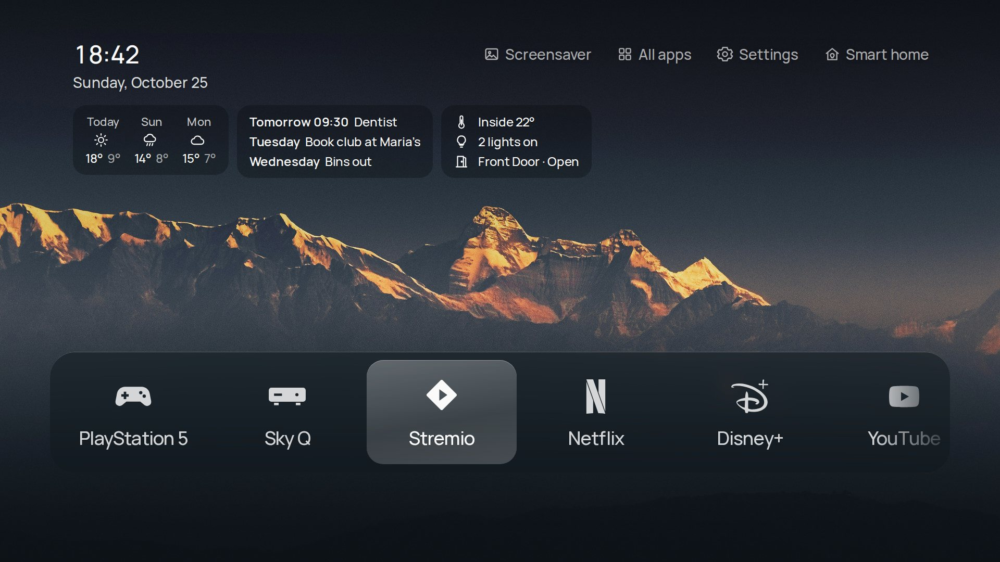
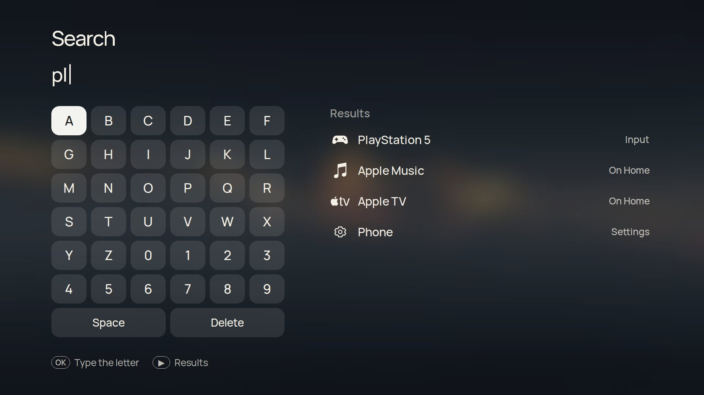
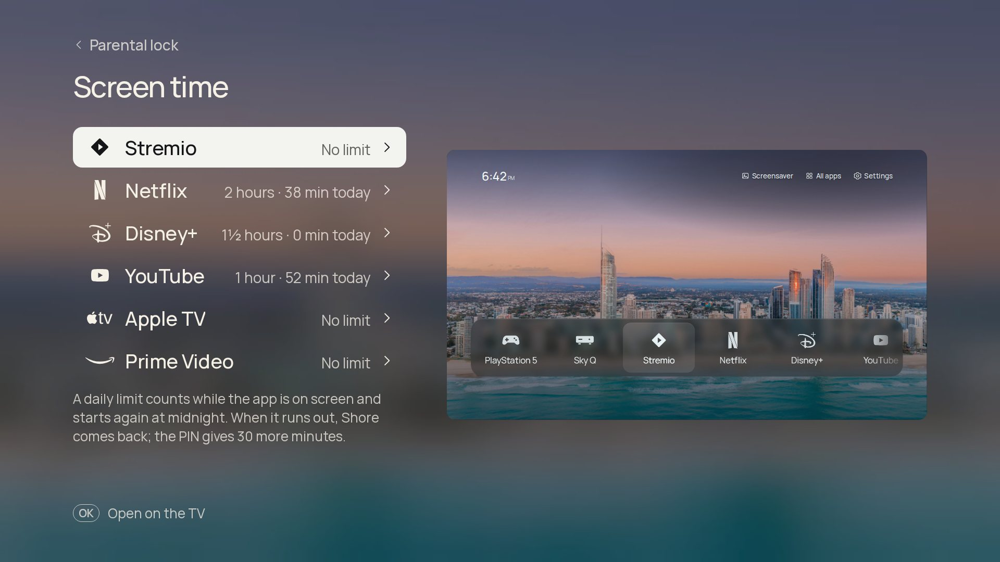
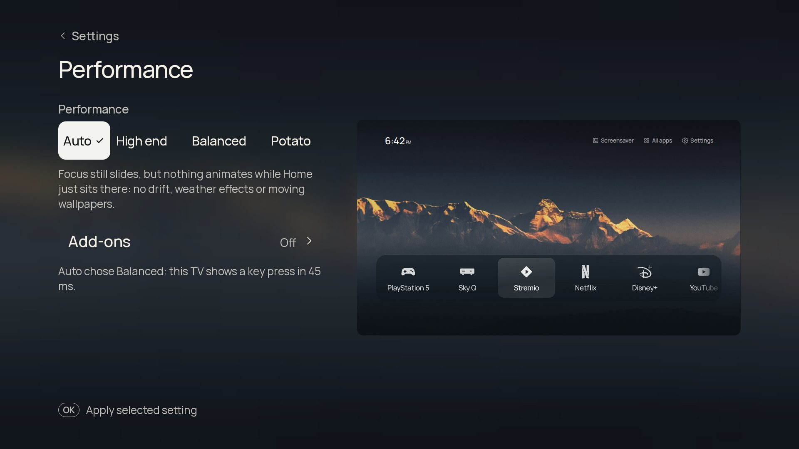
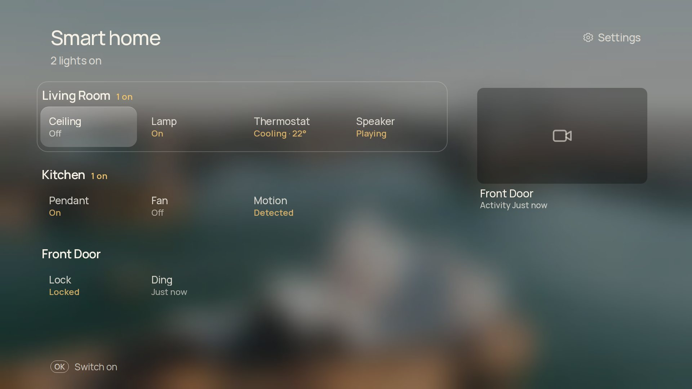

A plainer home screen for Google TV
Shore puts your apps, the devices plugged into HDMI and a photo you chose on the screen, with the time, the weather and a headline in the corner. Hold Home and you're back in Google TV.
Download the APK How to install
Free and open source, no ads, no accounts. New: Search, screen time limits and a Performance setting, widgets, and Italian and Turkish. Unofficial: not affiliated with TCL, Google, Samsung or any streaming service.

Your apps, and what's plugged in
Shore finds your installed apps and puts up to nine on Home, in the order you choose. Dock and List draw every logo the same way, in colour or in one colour, or from an icon pack you've installed. Hold OK on an app to give it its own icon, to move it or to open its App info. Apps you used lately follow yours, and Continue watching picks up where Twitch or Apple TV left off.


A console or set-top box gets a tile when you switch it on and loses it when you switch it off. The name comes over HDMI-CEC, so you see "PlayStation 5" rather than "HDMI 2", with an icon to match. If a device turns on while Home is showing, Shore asks whether to switch to it.
In Shelf, ARD, ZDF and ARTE show their picks as they are. YouTube, Twitch and the apps covered by TMDB need API keys in a build of your own. Shore is in English, German, French, Spanish, Dutch, Polish, Ukrainian, Italian and Turkish, following the TV's language.
A photo you chose
Fifteen photographs come with Shore. Online, it can fetch from NASA, Bing, Wikimedia Commons and Picsum without keys, and from Unsplash, Pexels and Klipy if you build it with your own. Bundled animated loops are included, and your phone can send photos, GIFs and short clips.
- RotationA new picture each time Home opens, every 5, 15 or 60 minutes, or by time of day: a brighter photo in the morning, a darker one in the evening.
- FavouritesFavourites always stay in rotation; hidden photos never come back.
- SmoothThe frosted panels are rendered once when a photo arrives, so the TV never blurs anything while you use it.


The time, and a little more
Optional lines and cards sit under the clock. Each is off until you turn it on, and has its own settings page.

- WeatherTemperature and sky from Open-Meteo, which needs no key or account. Rain, snow, fog or a storm can play over the photo while it's happening.
- WidgetsA row of small cards: three days of forecast, your next events and, with Home Assistant, the inside temperature, lights on and any open door.
- HeadlinesOne headline every 20 seconds from Google News, an outlet like tagesschau or BBC News, or an RSS feed you paste on your phone. Shore keeps only the titles.
- CalendarPaste your calendar's iCal address on your phone and the next event shows up: "Tomorrow 9:30 · Dentist". Google Calendar, iCloud and Outlook all have one.
- Now playingWhat another app is playing, such as Spotify in the background. If an app shares only a small cover, Shore can look for a sharper one; you can turn that off.
Music, full screen
While something plays, the ♪ button on Home opens the song full screen: the cover, a progress bar you can skip through, the controls, and lyrics that keep time with the music. Lines slide up as the song moves on and the words light up as they're sung.

- LyricsFrom LRCLIB, free and without an account. Shore only shows lyrics that match the version playing, so a radio edit or a cover gets none rather than the wrong words.
- Beat pulseOptional. The beat pushes the cover and background out a little. It listens to the TV's own sound, never a microphone.
- Up nextThe next three songs, when the music app shares its queue.
- TranslationOptional: each line translated into your TV's language, through Google Translate. Off until you turn it on.
And a few more things

Search
Apps, inputs and Settings pages in one place. Pick letters with the remote, or type on your phone.

Screen time
A daily limit for each app, behind the parental lock's PIN. When time's up Shore comes back, and the PIN gives 30 more minutes.

Performance
Auto measures your TV and picks High end, Balanced or Potato. The look and your settings stay the same; only what moves changes.
- ScreensaverShore's own slideshow of your wallpapers, with a large clock that changes corner so nothing burns in.
- Night modeDims everything on a timer or all the time, and can keep the rotation to darker photos.
- Sleep timer30 minutes to two hours, then the TV switches off, even in the middle of another app.
- Remote buttonsGive the shortcut keys and the TV button a new job: an app, an input, the screensaver or the sleep timer.
- UpdatesShore fetches new releases from GitHub, asks Android to install them, and shows what's new once.
Your phone, as a second remote
Turn on Settings › Phone and scan the code. The TV serves a small web app to your phone over your home Wi-Fi. Nothing passes through the internet, and the TV only answers phones that scanned its code.
- PhotosSend photos, GIFs and short videos. Each photo opens in a 16:9 frame first, so you can crop it for the TV.
- Settings and appsChange any TV setting, reorder the apps on Home and name your HDMI inputs.
- KeyboardType on the phone instead of the remote: into Shore's Search, or, once you turn on the optional phone keyboard, into a field in another app.
- Paste, don't spellThe weather city, a news feed, your calendar's address, and the address of your Home Assistant or Pi-hole.
- Backup and problemsSave every setting to a file and restore it later or on another TV. If something breaks, download a report to attach to a bug.


Add-ons for the rest of your home
Add-ons are optional and off until you switch them on. While one is off it isn't even loaded, so it costs your TV nothing, and each says what it costs on a slow TV.

- Home AssistantRooms, lights, switches, thermostats and cameras on a Smart home page, and your door camera when the bell rings. Built by mozthewah.
- Pi-hole and AdGuardToday's blocked share under the clock, and a pause for 5, 30 or 60 minutes. The password stays on the TV.
- Also add-onsWeather effects, Headlines and Widgets.
Install
You need a computer on the same network with Android's adb, once. Shore installs next to Google TV and doesn't replace or remove anything.
Turn on developer options.
On the TV, open Settings › System › About and press OK on Android TV OS build seven times.
Allow debugging in Settings › System › Developer options.
Connect and accept the prompt on the TV.
adb connect <tv-ip>:5555Install the APK from the latest release.
adb install -r Shore.apkPoint Home at Shore by turning on Settings › System › Accessibility › Shore Home button.
On TCL sets, also allow Shore to auto start in TV Guard.
From then on, Settings › Google TV › Shore updates fetches new releases and Android asks you before installing each one. The README covers Android 14 wireless debugging, the TCL auto start permission and an optional, reversible list of TCL extras to switch off.
Tested on
Shore is an ordinary Android TV app, so other Google TV and Android TV sets will probably work too. On a slow one, choose Potato in Settings › Performance.
Tried it on another TV? Send a TV report.
- TCL 55C6KSAndroid TV 12 (Google TV). The reference TV: everything is built and checked here.
- TCL 65C7KGoogle TV. Reported working.
- CHiQ L32QM8GAndroid 14. Reported working.
- Hisense A6NAndroid TV 12, with 2 GB of memory. Works with about 360 MB free; the Home Assistant add-on was tested here.
Questions
How do I get the normal Google TV home screen back?
Hold Home for a second. To stop Home opening Shore altogether, turn off Shore Home button in Accessibility, or uninstall Shore.
What does Shore send over the internet?
Only what the features you turned on need: weather from Open-Meteo, headlines from your news source, photos from the wallpaper sources you ticked, lyrics from LRCLIB, Top Shelf picks, the artist and title for album art if you allow it, and a check for new releases on GitHub. The addresses and passwords of Home Assistant, Pi-hole and AdGuard stay on the TV. There are no accounts, analytics or ads.
What can the Home button service see?
Only remote keys and which app is in front. It never reads screen content. The phone keyboard is a second, optional accessibility service that stays off until you turn it on and looks for the focused text field only when your phone sends text.
Will it work on my TV?
It's built on a TCL 55C6KS with Google TV on Android 12, and people have it running on a TCL 65C7K, a CHiQ L32QM8G with Android 14 and a Hisense A6N with 2 GB of memory. It's an ordinary Android TV app, so other Google TV and Android TV devices will probably work too.
Is it slow on an older TV?
Settings › Performance is on Auto: Shore checks what your TV reports, measures how long it takes to show a key press and keeps the animations it can draw smoothly. You can choose High end, Balanced or Potato yourself. None of them changes the look or your settings. Add-ons are only loaded when you switch them on.
Do updates keep my settings?
Yes. Your settings and photos stay. A copy you built yourself is signed with a different key, so it tells you about new versions instead of installing them.
Who made it?
Shore is a fork of CleanFrame by Nathan Clark, which was written for Samsung's The Frame. Both are MIT licensed. The Home Assistant add-on was made by mozthewah. Fonts, photos and app logos keep their own licences, listed in THIRD_PARTY_NOTICES.md.
Support it
Shore is free, with no ads and no tracking, and it's made in spare time. If it made your TV nicer, a coffee or a monthly sponsorship keeps new features and fixes coming.
Questions, ideas or a TV to report? The Discord is the fastest way to reach me.